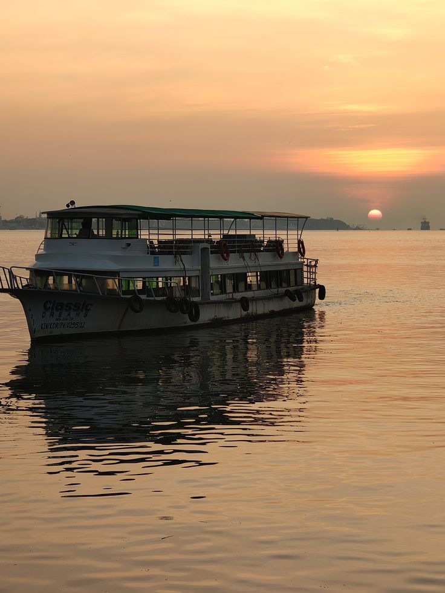
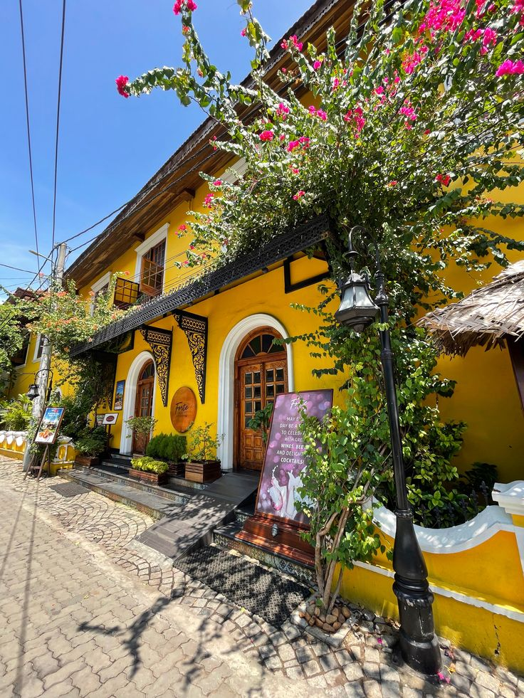
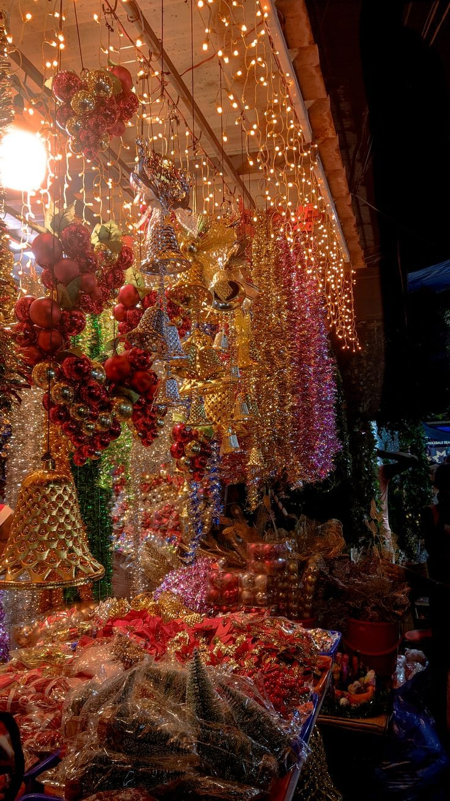
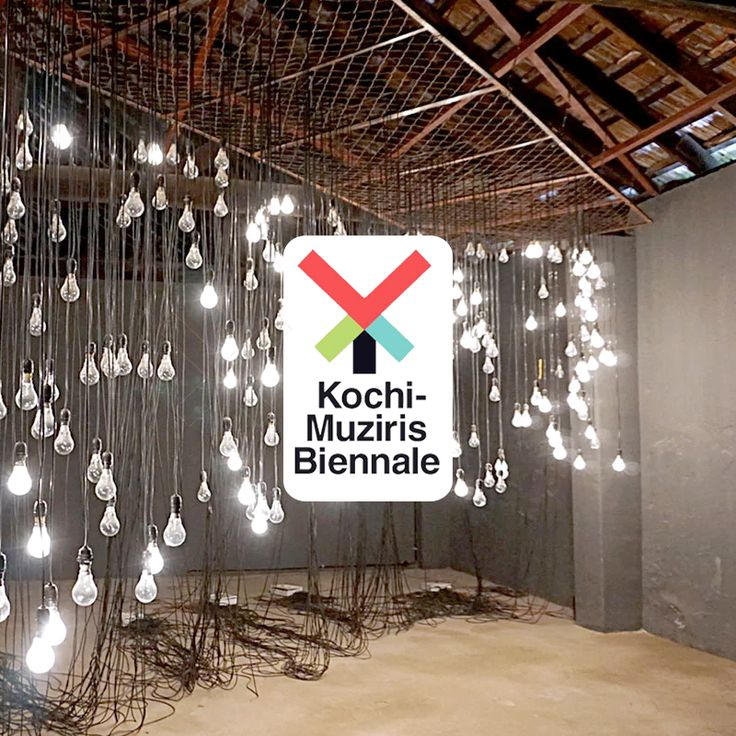
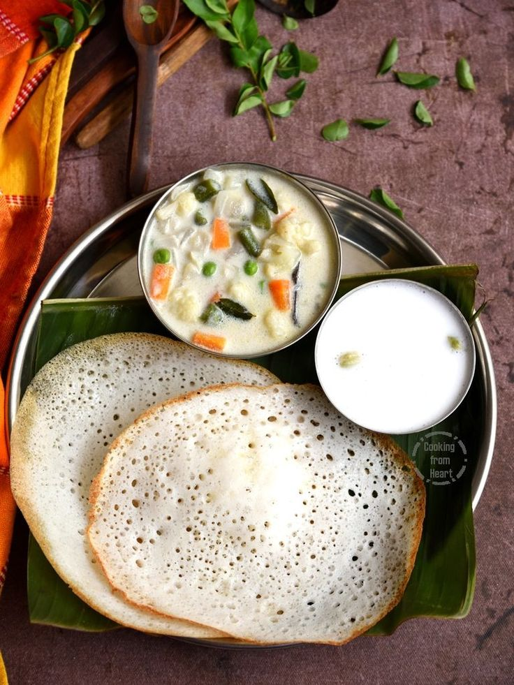

Kochi Over_all View
Kochi, also known as Cochin, is a port city blending colonial heritage with modern culture. It is famous for its Chinese fishing nets, churches, and vibrant art scene.
Peaceful Nature Spot (Marine Drive)
Marine Drive is a scenic promenade in Kochi, offering peaceful walks along the waterfront and views of the backwaters.


Historical Place (Fort Kochi)
Fort Kochi is a historic area with colonial buildings, churches, and cultural landmarks, reflecting Kochi’s rich past.
Local Market (Broadway Market)
Broadway Market is a bustling shopping area in Kochi, offering spices, textiles, and souvenirs.


Famous Festival (Biennale Art Festival)
The Kochi-Muziris Biennale is an international art festival showcasing contemporary art, making Kochi a global cultural hub.
Famous Local Food Items (Meals → Appam with Stew)
Appam with vegetable or chicken stew is a popular dish in Kochi, soft rice pancakes paired with flavorful curry.
